このページでは、2つの早見表の見方と使い方を、画面の写真つきで説明します。プログラムの知識は必要ありません。
このツールには、画面の上で切り替える2つの表があります。「利益早見表」と「仕入れ価格早見表」です。どちらも、条件を入力すると表がすぐに変わります。使う場面が違うので、先に整理します。
先に覚えておく言葉
仕入れ値と送料を入れると、「いくらで売れば、どれだけ利益が残るか」を確認できます。出品するときの価格決めに使います。
オファーが来たときにも使えます。「自分の条件で、いくらまで下げて受けてよいか」を考える材料になります。表の中で、利益率が0%の行は、利益がおよそ0円になる価格です。端数の関係で、1円ほどずれることがあります。
例：オファーが来たとき（仕入れ 5,000円、送料 1,500円、広告費率 10%。ツールの初期設定のままの場合）
| 利益率 | 出品価格（$） | 利益額（円） |
|---|---|---|
| 0% | 59.03 | 0 |
| 5% | 63.57 | 500 |
| 10% | 68.86 | 1,083 |
| 15% | 75.12 | 1,772 |
62ドルのオファーが来たとします。62ドルは 59.03ドル（利益率0%）と 63.57ドル（利益率5%）の間にあります。この条件の計算では、赤字にはならない一方で、利益率5%には届かない金額です。受けるか、少し高い金額で返すかを考えるときの材料にできます。
オファーの金額は、「出品価格」の列と比べてください。「調整あり」の行では、出品価格が販売価格と違う金額になるためです。
先に売る価格を入れると、「その価格で売れるとして、仕入れにいくらまで払えるか」を確認できます。仕入れる前に、利益が確保できそうかを考えるときに使います。
例：仕入れる前（価格 100ドル・関税を含まない価格、送料 1,500円、広告費率 10%）
| 利益率 | 仕入れ価格の上限（円） |
|---|---|
| 0% | 9,512 |
| 5% | 8,725 |
| 10% | 7,938 |
| 15% | 7,152 |
仕入れ先の価格が 7,500円だとします。利益率10%の上限は 7,938円なので、10%は狙えます。利益率15%の上限は 7,152円なので、15%には届きません。
まず、画面の上にあるタブで「利益早見表」を選びます。はじめて開いたときは、こちらが選ばれています。前回選んだ表は、次に開いたときも覚えています。
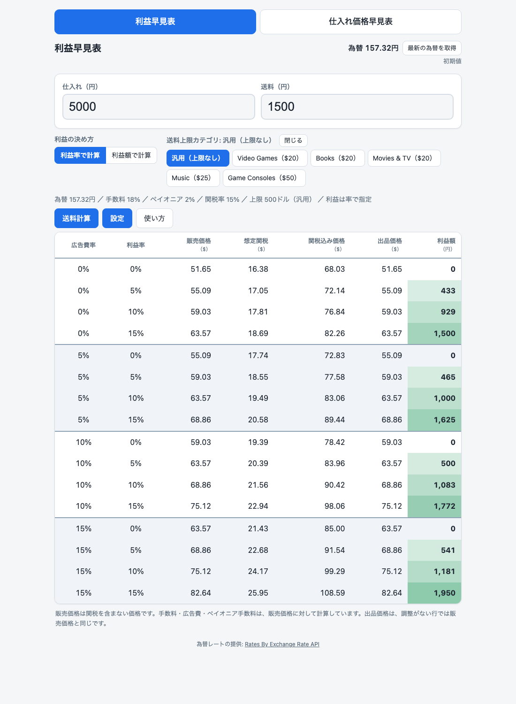
表の上の1行（為替・手数料・関税率などが並んだ行）には、いま計算に使っている条件が出ています。表の数字が思ったものと違うときは、まずここを見てください。
画面の右上（表の名前と同じ高さ）に、いま計算に使っている為替が「為替 157.32円」のように出ています。その横の「最新の為替を取得」ボタンを押すと、「設定」を開かなくても、最新の為替を取得して計算に使えます。取得するのは、このボタンを押したときだけです。自動では更新されません。
ボタンの下の小さな文字は、いまの為替の状態です。
| 表示 | 意味 |
|---|---|
| 初期値 | ツールに入っている初期の為替を使っています。 |
| 9/30 08:38 に取得 | ボタンで取得した為替です。日時は取得した時刻で、お使いの端末の時刻で出ます（日時は例です）。 |
| 手入力の値 | 「設定」の為替の欄に、自分で数字を入れた値です。 |
取得中は「取得中です…」と出て、うまくいかなかったときは、同じ場所にメッセージが出ます（第9章）。為替のデータは、画面のいちばん下に書いてある提供元から取得します（第8章）。
| 列の名前 | 意味 |
|---|---|
| 広告費率 | 広告費を、販売価格の何%にするかです。 |
| 利益率 | 販売価格に対して、利益を何%残すかです。 |
| 販売価格（$） | 関税を含まない価格です。手数料・広告費・ペイオニア（海外から代金を受け取る際の受取サービス）の手数料は、この価格に対して計算しています。 |
| 想定関税（$） | 買い手にかかると見込む関税です。設定した関税率などから計算します。 |
| 関税込み価格（$） | 販売価格に想定関税を足した金額です。 |
| 出品価格（$） | 実際に出品する価格の目安です。調整がない行では、販売価格と同じです。 |
| 利益額（円） | その条件で手元に残る利益を、円で表しています。 |
利益率0%の行の意味
利益率0%の行は、利益額がおよそ0円になる価格です。値下げ交渉の下限を考える目安になります。
販売価格はセント単位に丸めて計算するため、0%の行でも利益額が 0円ではなく 1円や -1円と出ることがあります（第4章の写真でも見られます）。赤い「-1」のような小さな数字は、端数の丸めによるもので、本当の赤字ではありません。大きなマイナスの数字が出たときは、赤字です。
手数料と広告費と利益の割合を合わせて100%以上になる条件では、その行に「計算不可（率の合計が100%以上）」と出ます。設定を見直してください。
画面の「利益の決め方」にある2つのボタンで、利益の指定のしかたを切り替えます。
並べる値そのものは、「設定」で変えます（第7章で説明します）。
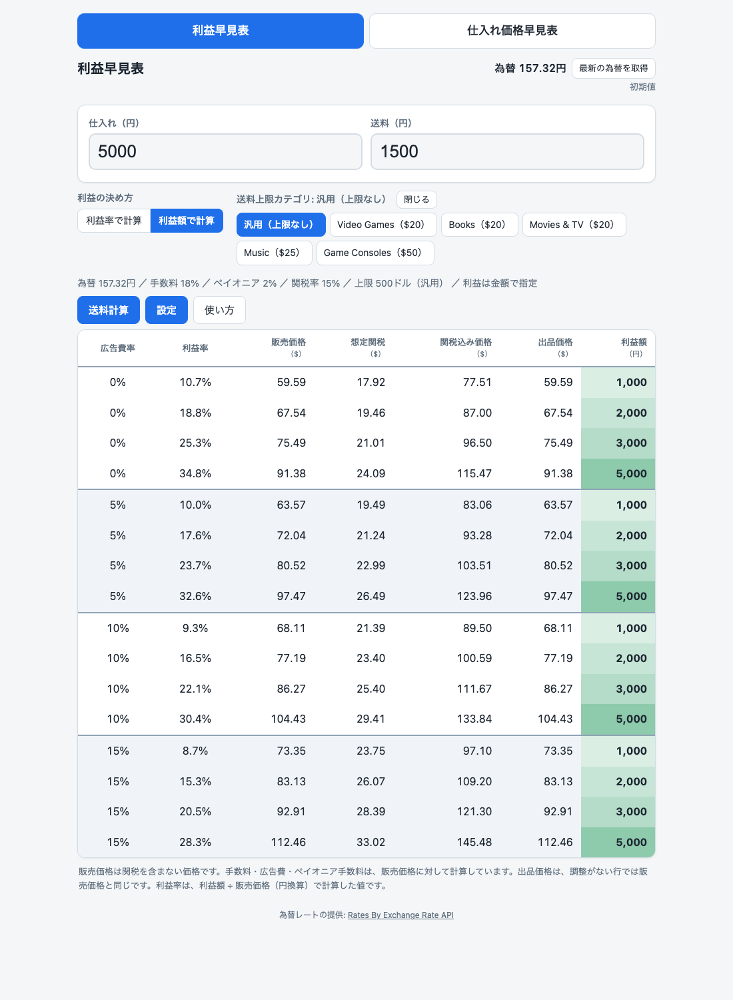
ツールは、次の考え方で計算します。「関税の分は送料として買い手に請求し、カテゴリごとに請求できる送料の上限があります。」この考え方はツールの前提です。実際の扱いは、販売サイトの案内で確認してください。
画面の「送料上限カテゴリ」に、6つのボタンがあります。
ボタンの金額は、ツールの中で決まっていて、変えられません。商品に合わせてカテゴリを選びます。どのカテゴリに当たるかは、販売サイトの案内で確認してください。
「汎用（上限なし）」は、カテゴリ別の上限がない商品のためのボタンです。ただし、ツールはこのときも、設定の「汎用のときの上限（ドル）」を使います（初期値は 500ドルです。第7章の写真にも出ています）。想定関税がこの金額以上になった行には、カテゴリを選んだときと同じ赤い表示が出ます。
想定関税が、選んだカテゴリの上限に届いた行では、2つの赤い表示が出ます。
これは、関税として請求するのは上限の金額までにして、残りを出品価格に乗せた、という意味です。計算はこうなります。
出品価格 ＋ 請求する関税（上限の金額） ＝ 関税込み価格
買い手が払う合計は、調整があってもなくても、関税込み価格と同じです。
下の写真で確認します。条件は、Video Games（$20）、仕入れ 20000円、送料 1500円です。広告費率10%、利益率10%の行を見てください。
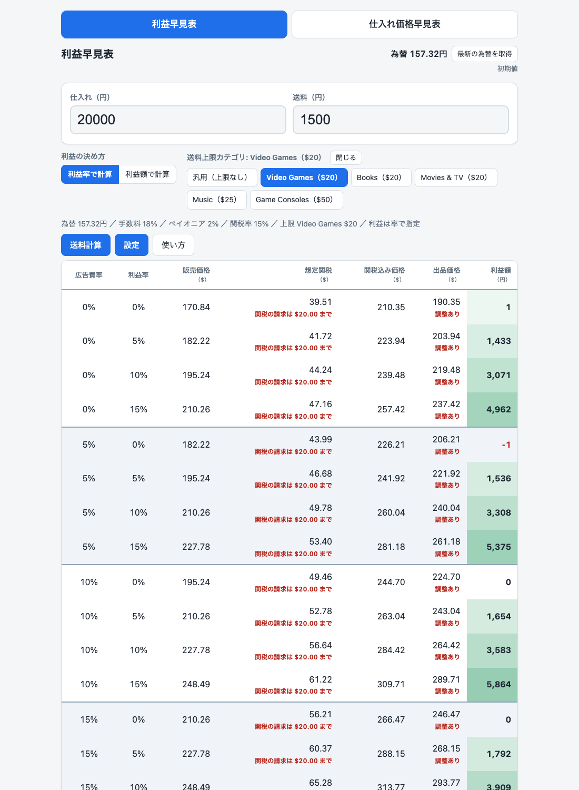
調整ありの行があるときは、表の下に説明文が出ます。
「設定」の「想定関税が上限以上のとき、出品価格を調整する」のチェックを外すと、出品価格の調整をしなくなります。このとき、次のように変わります。
カテゴリの欄は、右上の「閉じる」ボタンで小さくできます。閉じると、ボタンが「開く」に変わります。閉じている間も、選んだカテゴリはそのまま計算に使われます。
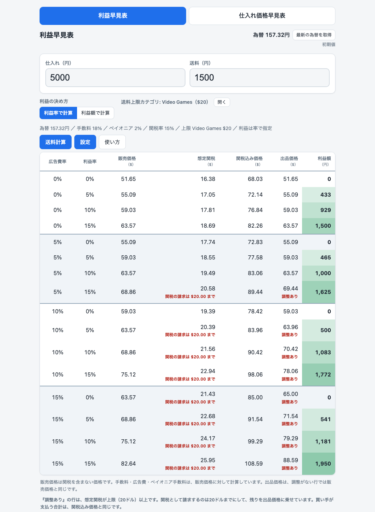
送料が分からないときは、「送料計算」を使います。荷物の重さと大きさを入れると、配送方法ごとの送料が一覧で出ます。画面の「送料計算」ボタンを押すと、画面の右側に、送料計算のパネル（操作欄）が開きます。
パネルは、パネル内の「閉じる」ボタン、または「送料計算を閉じる」ボタンで閉じます。キーボードのEscキーでも閉じられます。「設定」のパネルも同じです。
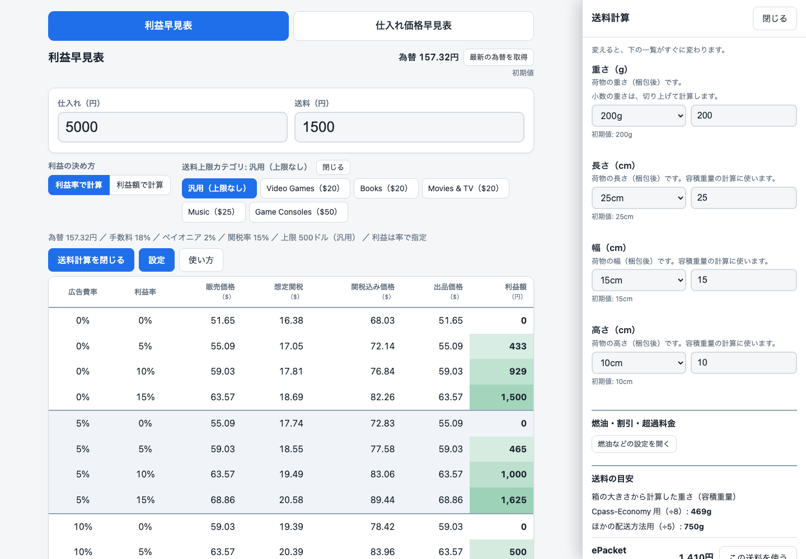
各欄は、一覧から数字を選ぶか、その横の欄に数字を直接入れます。値を変えると、下の一覧がすぐに変わります。
「送料の目安」に、配送方法が6つ並びます（ePacket、Cpass-Economy、EMS、Cpass-FedEx、Cpass-DHL、eLogistics）。方法ごとに「料金に使う重さ」も出ます。次の表は、ツールの計算で、どの重さを使うかをまとめたものです（配送会社の決まりを説明するものではありません）。
| 配送方法 | ツールが料金に使う重さ |
|---|---|
| ePacket、EMS | 入力した重さ |
| Cpass-Economy | 入力した重さと、容積重量（大きさ÷8）の大きい方 |
| Cpass-FedEx、Cpass-DHL、eLogistics | 入力した重さと、容積重量（大きさ÷5）の大きい方を、500g単位に切り上げた重さ |
写真の例では、入力した重さが 200g、大きさが 25 × 15 × 10 cm です。容積重量は、Cpass-Economy 用が 469g、ほかの配送方法用が 750g です。750g は 500g単位に切り上げて、Cpass-FedEx などでは 1,000g として計算されます（次の写真の一覧にも出ています）。
重さや大きさによっては、その配送方法が使えない場合があります。そのときは、金額の代わりに「対象外（○○gまで）」と出て、ボタンは出ません。「ほかの配送方法を選んでください。」という案内に従って、別の方法を選びます。
使いたい配送方法の横の「この送料を使う」を押すと、その金額が「送料（円）」に入ります。入力欄の下には、どの方法・どの重さで決めたかが小さく出ます。
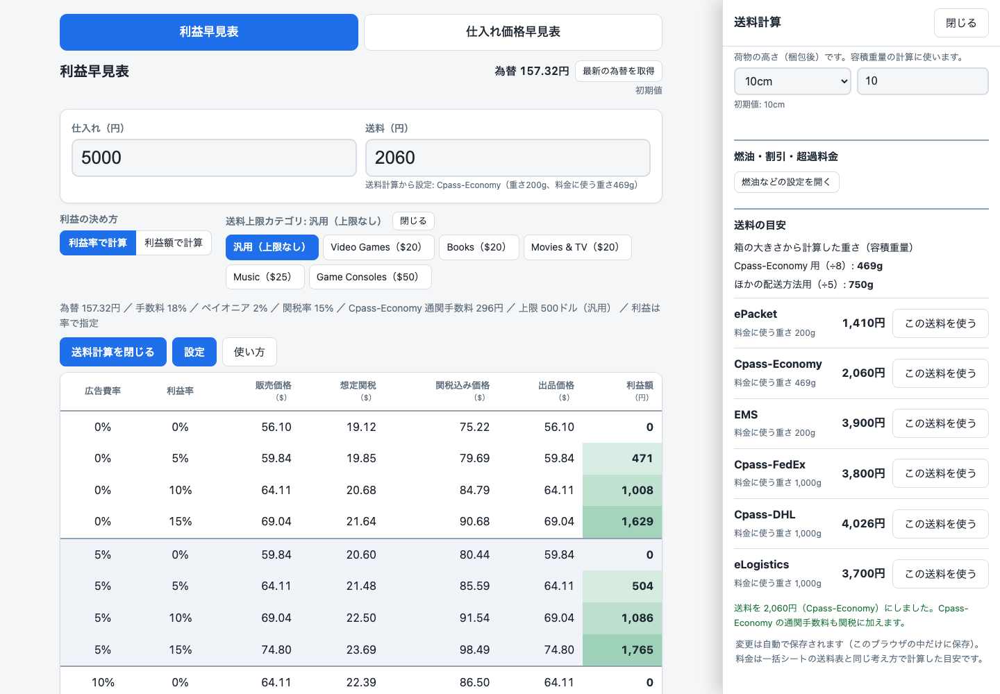
パネルの下には、次の確認メッセージが出ます。
送料を 2,060円（Cpass-Economy）にしました。Cpass-Economy の通関手数料も関税に加えます。Cpass-Economy は、配送サービスの1つです。
送料の欄を自分で書き換えると、入力欄の下の説明は消えます。
パネルの「燃油などの設定を開く」を押すと、送料に関わる次の5項目を変えられます。閉じるときは「燃油などの設定を閉じる」を押します。数字は、ツールの初期値です。配送会社の料金を示すものではありません。実際の条件に合わせて変えてください。
| 項目 | 意味 | ツールの初期値 |
|---|---|---|
| 燃油サーチャージ FedEx（%） | FedExの送料にかかる、燃料費の上乗せ割合です。 | 40% |
| 燃油サーチャージ DHL（%） | DHLの送料にかかる、燃料費の上乗せ割合です。 | 40% |
| Cpass割引（%） | Cpassの料金から値引きされる割合です（FedEx・DHLだけに使います）。 | 0% |
| 超過料金 FedEx（500gあたり・円） | 500gを超えた分について、500gごとに料金表の金額へ加える金額です。 | 115円 |
| 超過料金 DHL（500gあたり・円） | 同じ考え方の、DHL用の金額です。 | 96円 |
画面上のタブで「仕入れ価格早見表」を選びます。こちらは、売る価格から逆算して、仕入れにいくらまで払えるかを出す表です。
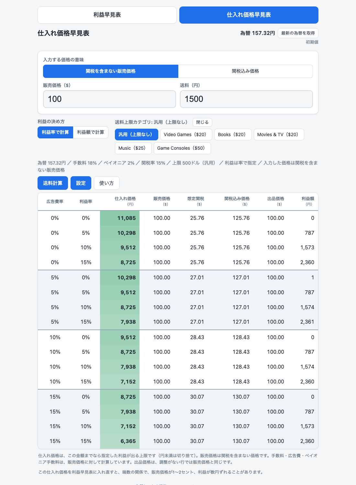
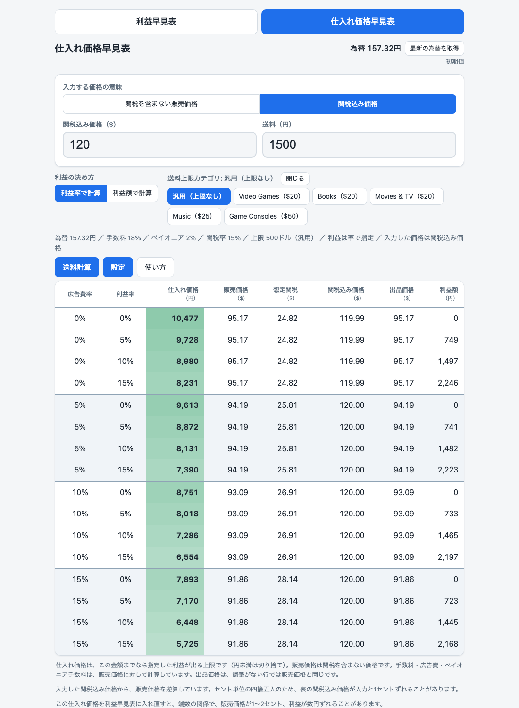
「設定」ボタンを押すと、画面の右側にパネル（操作欄）が開きます。変えると、表がすぐに変わります。「設定を閉じる」ボタンか、パネル内の「閉じる」ボタン、またはEscキーで閉じます。右側のパネルは、「設定」と「送料計算」のどちらか1つだけが開きます。
広告費率・利益率・利益額は、それぞれ4つの枠があります。各枠は次のように使います。
「利益率（%）」と「利益額（円）」のうち、いま表に使っている方には「いま使用中」の印が付きます。どちらで計算するかは、設定ではなく、画面の上のボタンで切り替えます。
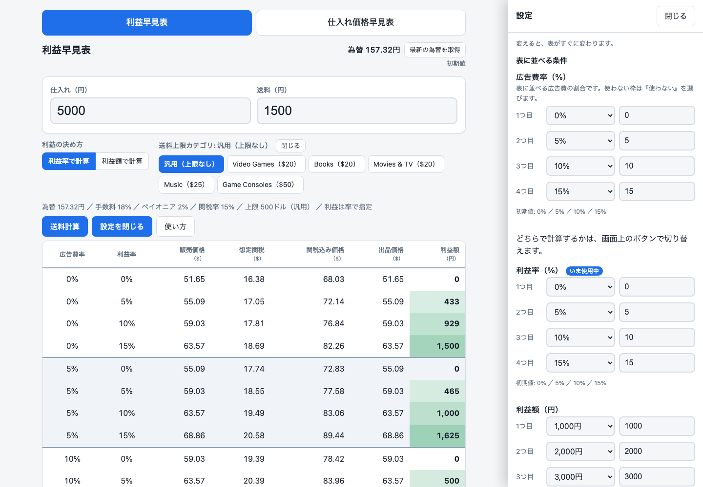
次に、為替（1ドルが何円か）、手数料率、ペイオニア手数料率の項目があります。ここに入っている数字は、ツールの初期値です。実際の条件に合わせて変えてください。
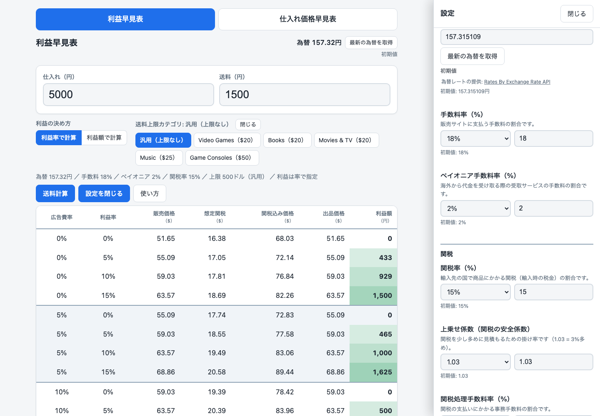
設定の「関税」のグループには、次の項目があります。数字は、ツールの初期値です。説明は、ツールの画面に出ている説明にそろえています。
| 項目 | 意味 | ツールの初期値 |
|---|---|---|
| 関税率（%） | 輸入先の国で商品にかかる関税（輸入時の税金）の割合です。 | 15% |
| 上乗せ係数（関税の安全係数） | 関税を少し多めに見積もるための掛け率です（1.03 = 3%多め）。 | 1.03 |
| 関税処理手数料率（%） | 関税の支払いにかかる事務手数料の割合です。 | 2.1% |
| VAT率（%） | 欧州などでかかる付加価値税（消費税に近い税金）の割合です。 | 8% |
| EU送料差額（円） | 円をドルに直して、想定関税に加える金額です。 | 1000円 |
| MPF（ドル） | 米国の通関でかかる手続き費用（ドル）です。 | 0ドル |
| Cpass-Economy で送る | Cpass-Economy（配送サービスの1つ）で送るときにチェックします。下の通関手数料が想定関税に加わります。 | 使わない |
| 通関手数料（円） | Cpass-Economy 利用時にかかる通関の手数料です。「Cpass-Economy で送る」がオフの間は、灰色になって変えられません。 | 296円 |
パネルの下の方には、送料の上限（カテゴリ別）の説明と、「想定関税が上限以上のとき、出品価格を調整する」のチェック、「汎用のときの上限（ドル）」があります。
いちばん下の「初期値に戻す」を押すと、設定などがツールの初期値に戻ります。押したあとに、ツール自身が次のメッセージを出します。
設定を初期値に戻しました。利益の決め方・送料上限カテゴリ・送料計算の条件も初期値に戻っています。入力した仕入れ・価格・送料はそのままです。送料計算から送料を設定していた場合は、続けて「送料計算から設定した表示は消しました。」と出ます。メッセージは、約8秒後に自動で消えます。
| 区分 | 内容 |
|---|---|
| 初期値に戻るもの | 「設定」の全項目（表に並べる条件、為替、手数料、関税の項目、「想定関税が上限以上のとき、出品価格を調整する」のチェック、「Cpass-Economy で送る」、「汎用のときの上限（ドル）」）／「利益の決め方」の切り替え／送料上限カテゴリ／「送料計算」のすべての欄／為替の状態の表示（「初期値」に戻ります） |
| そのまま残るもの | いま選んでいる表（利益早見表か仕入れ価格早見表か）／入力した仕入れ／入力した価格と「入力する価格の意味」／入力した送料／カテゴリの欄の開閉の状態 |
| 消えるもの | 送料計算から設定した送料の記録（送料欄の下の説明）と、パネルの確認メッセージ |
「この送料を使う」で Cpass-Economy の送料を入れていた場合、「初期値に戻す」のあとも送料の金額はそのままです。ただし、「Cpass-Economy で送る」の設定はオフに戻ります。そのため、表の数字が変わります。必要なときは、もう一度「この送料を使う」を押してください。
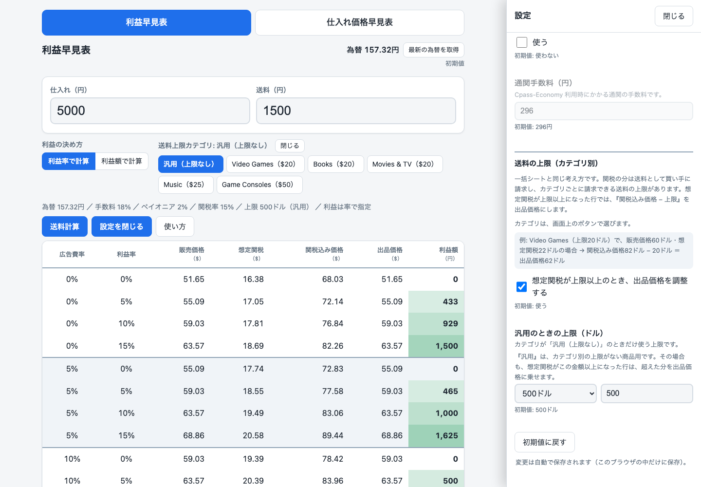
入力が使えない値のときは、ツールが次のメッセージを出します。メッセージごとの対処をまとめます。為替のメッセージは、主画面の右上の状態表示と、「設定」の為替の欄の下に出ます。
| メッセージ | 出る場面と対処 |
|---|---|
| 仕入れと送料を入力してください（0以上の数字） | 利益早見表で、「仕入れ（円）」か「送料（円）」が空、または数字でないとき。0以上の数字を入れ直します。 |
| 価格は小数2桁までで入力してください。 | 仕入れ価格早見表で、価格の小数が3桁以上あるとき。小数2桁までにします。 |
| 価格は0より大きい数字、送料は0以上の数字を入力してください。 | 仕入れ価格早見表で、価格か送料が使えない値のとき。価格は0より大きい数字、送料は0以上の数字にします。 |
| 使えない値のため、この欄は使いません（0以上、100未満の数字）。 | 広告費率・利益率の枠に使えない値を入れたとき。その枠は使われません。0以上100未満の数字にします。 |
| 使えない値のため、この欄は使いません（0以上の数字）。 | 利益額の枠に使えない値を入れたとき。その枠は使われません。0以上の数字にします。 |
| 使える値が1つもないため、初期値（…）を使っています。 | 1つのグループの枠がすべて使えない値のとき。初期値が使われます。使える値を入れ直します。 |
| 入力が正しくないため、初期値を使っています。 | 設定の項目に使えない値を入れたとき。その項目は初期値で計算されます。 |
| 重さと大きさを入力してください（0より大きい数字） | 送料計算で、重さか大きさが空、または0以下のとき。0より大きい数字を入れます。 |
| 入力が正しくないため、初期値を使っています（上限は …）。 | 送料計算の「燃油などの設定」に使えない値を入れたとき。上限を確認して入れ直します。 |
| 100〜200の範囲で入力してください。初期値を使っています。 | 為替の欄が範囲の外のとき。100〜200の範囲で入れ直します。 |
| 計算できません（価格が小さすぎます） | 仕入れ価格早見表で、価格が小さすぎて計算できない行。価格を大きくします。 |
| 計算不可（率の合計が100%以上） | 手数料・広告費・利益などの率の合計が100%以上になった行。広告費率や利益率、手数料率を見直します。 |
| 為替を取得できませんでした（時間切れ）。もう一度お試しください。 | 「最新の為替を取得」で、時間内に返事が来なかったとき。もう一度押します。 |
| 為替を取得できませんでした。通信状態を確認して、もう一度お試しください。 | 通信に失敗したとき。通信状態を確認して、もう一度押します。 |
| 為替を取得できませんでした。 | 取得の処理そのものに失敗したとき。もう一度お試しください。 |
| 取得した値が想定の範囲外だったため、使いませんでした。 | 取得した為替が100〜200の範囲の外だったとき。いまの値のままです。為替は手で入力できます。 |